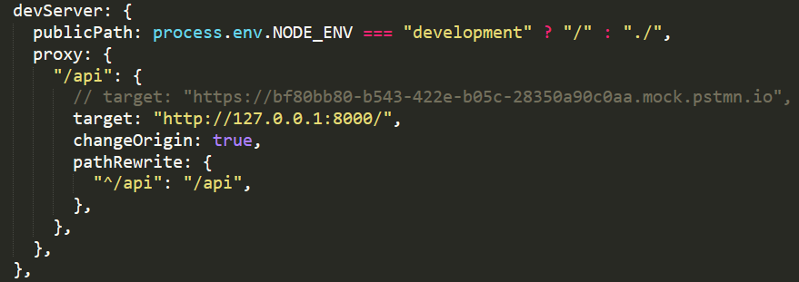
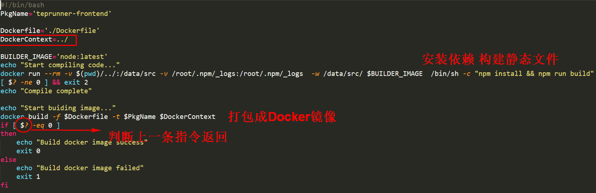

3 teprunner测试平台部署到Linux系统Docker¶

本文是一篇过渡，在进行用例管理模块开发之前，有必要把入门篇开发完成的代码部署到Linux系统Docker中，把部署流程走一遍，这个过程对后端设计有决定性影响。
本地运行¶
通过在Vue项目执行npm run serve和在Django项目执行python manage.py runserver，我们把项目在本地跑起来了，示意图如下：

前端在本地启了个Node服务器，后端在本地启了个Django服务器，分别使用8080和8000端口。浏览器有个同源策略：域名、端口、协议三者一致才能进行访问，否则会由于跨域访问而被浏览器拦截。图中前后端的端口不一致，出现了跨域，前端是无法直接请求后端的。解决办法是在vue.config.js中配置devServer：

这是Node开的一个代理服务器，当前端请求后端时，会先发向Node代理服务器，Node代理服务器以相同的参数向真正的后端服务器进行请求，再把响应返回给前端。在本项目中，前端请求仍然是发给http://127.0.0.1:8080，浏览器不会拦截，Node代理服务器会帮你把请求转发给后端8000端口。
Nginx部署¶
搞懂了本地运行代理转发，再来看看Nginx部署。Nginx本身是个服务器，就像Node服务器一样，也可以看做Apache
Tomcat。Vue项目使用npm run build命令把代码构建为dist目录静态文件，放到Nginx服务器中加载出来，结合Docker示意图如下：
相比于本地运行，Nginx部署时，前端变化比较大，一：dist静态文件拷贝到了/usr/share/nginx/html目录中，二：对/路径来说，Nginx会监听80端口，三：对/api路径来说，Nginx会把请求转发到后端服务器端口，这也叫做反向代理。后端没有什么变化，为了和本地运行看着有点区别，把端口稍微改了下，Docker内部使用80端口。
这里比较关键的是理解Docker teprunner-frontend、Docker teprunner-backend、Linux三者之间的关系。如果不知道Docker，那么应该听说过虚拟机，Docker从概念上理解就像是虚拟机，这三者可以看做是三台主机。Linux的IP是172.16.25.131，80端口映射到了Docker teprunner-frontend的80端口，8099端口映射到了Docker teprunner-backend的80端口，如图中下方双向箭头所示。在Linux上访问http://127.0.0.1，能打开登录页面，但是无法向后端发起请求，因为从80端口直接请求8099端口，跨域了。解决办法是在Docker teprunner-frontend借助Nginx进行反向代理，把请求先发送到Nginx服务器，再转发给Linux的8099端口。
不能在
Docker teprunner-frontend中把/api的代理设置为http://127.0.0.1:8099，因为这个Docker容器的8099端口并没有启用，启用的是Linux这台机器上的8099端口，所以需要通过IP来指定。
整体思路明确了，接下来就开始动手操作。
编写deploy脚本¶
前端
打开teprunner-frontend文件夹，新建deploy/nginx.conf文件：
/路径从user/share/nginx/html读文件，入口为index.html，/api转发到http://172.16.25.131:8099。这个文件会拷贝到Docker镜像中。新建Dockerfile文件：
FROM定义了基础镜像，可以理解为操作系统，前端项目基于nginx来构建。WORKDIR定义了镜像当前工作目录，意思是在执行后面COPY操作时，镜像目录用哪一个。COPY分别把dist静态文件和nginx.conf配置文件拷贝到镜像中，COPY指令第一个参数是本机目录，第二个参数是镜像目录。镜像目录通过WORKDIR来指定，本机目录通过Docker上下文来指定，新建build.sh文件：

DockerContext指定了Docker上下文为teprunner-frontend根目录。这里的Shell脚本有两个阶段，第1阶段是使用node编译：
docker run # 运行镜像
--rm # 运行后删除容器
-v $(pwd)/../:/data/src # $(pwd)指当前工作目录，把根目录挂载到data/src
-v /root/.npm/_logs:/root/.npm/_logs # 挂载日志文件
-w /data/src/ # 镜像当前工作目录
$BUILDER_IMAGE # 运行镜像为node:latest，用node编译前端代码
/bin/sh -c "npm install && npm run build" # /bin/sh是shell可执行程序，调用执行npm命令
第2阶段是打包成Docker镜像：
docker build # 构建镜像
-f $Dockerfile # 指定Dockerfile文件位置
-t $PkgName # 镜像包名
$DockerContext # Docker上下文
后端
后端也是类似的，先新建deploy/Dockerfile文件：

后端项目基于python:3.8来构建，接着设置了时区，COPY . .把Django源文件直接复制到了镜像目录/app/release中，RUN指令执行pip install命令安装依赖包，CMD和RUN有点区别，RUN指令在docker build时就执行，CMD指令在docker run时才执行，预定义启动命令。
这里简化了迁移数据库
migrate等启动命令，服务器数据库和本地用的同一个。
再新建build.sh文件：
Python代码不需要编译，打包成Docker镜像就可以了。
部署到Ubuntu系统Docker¶
Linux系统是内核版本，它有很多发行版本，比如CentOS、Ubuntu，本文采用了Ubuntu，只有一个原因，它长的好看。
大学室友曾经冲动地把Windows系统换成了Ubuntu，还天天跟我们炫耀有多酷炫有多牛逼，过了两三天发现Office不好用，也玩不了游戏，就又换回来了。哈哈，Ubuntu平时玩玩就好了，除非是做Linux内核开发。
下载软件：
VMware 破解版
Ubuntu Desktop 20.04
安装过程此处不再另加赘述。打开虚拟机的Ubuntu：
打开Terminal，输入su，输入密码，切换到root：
发现缺少权限就
su一下。
安装curl：
apt-get install curl
安装docker：
curl -fsSL https://get.docker.com | bash -s docker --mirror Aliyun
使用ifconfig查询虚拟机IP：
不要选择.git和node_modules文件夹，把teprunner-frontend打成压缩包。不要选择.git和__pycache__文件夹，把teprunner-backend打成压缩包。复制前后端压缩包到虚拟机Documents解压：
Ubuntu
Desktop的好处是提供了图像化操作界面，适合我这种小白用户。使用命令行编辑工具vi或者图形编辑工具gedit编辑teprunner-frontend/deploy/nginx.conf文件中/api转发地址为你的虚拟机实际IP地址：
打开两个Terminal，分别cd到teprunner-frontend/deploy和teprunner-backend/deploy，执行./build.sh命令。
如果执行提示
^M之类报错，那是因为在Windows编辑后复制到Linux格式不一致，使用apt-get install dos2unix命令安装工具后进行格式转化，比如dos2unix build.sh、dos2unix Dockerfile。
前端构建截图：
第一次因为要下载node依赖包和拉取nginx镜像，会比较慢，第二次就快很多了。
后端构建截图：
第一次因为要拉取python镜像，会比较慢，第二次就快多了。
都构建完成后，输入docker images命令就能看到打包好的Docker镜像了：
启动前端镜像：
docker run -p 80:80 teprunner-frontend
启动后端镜像：
docker run -p 8099:80 teprunner-backend
镜像启动后就变成了Docker容器，可以理解为一台虚拟主机。
-p参数用于映射Ubuntu端口和Docker端口。可以添加-d参数让容器在后台运行。docker ps -a查看容器，docker kill CONTAINER或docker stop CONTAINER退出容器。
最后可以在虚拟机中访问http:127.0.0.1进行登录了，本地机器想要访问的话，需要把127.0.0.1改为你的虚拟机实际IP，比如http://172.16.25.131。
小结¶
本文先介绍了本地运行和Nginx部署的示意图，涉及到跨域访问和反向代理。接着编写deploy脚本，编译代码，构建镜像。最后部署到Ubuntu系统的Docker中运行起来。在使用过程中，也感受到了Docker这一划时代技术的魅力，如果没有Docker，我们需要在Ubuntu上面安装nginx、node、python等软件，有了Docker，我们只需要安装Docker，其他都基于Docker镜像构建就可以了。teprunner测试平台的用例采用的是代码形式，这就涉及到了代码存放位置的问题，为了让pytest能调用执行，肯定是存放到文件里面的。本文实践给了个重要提醒，如果后端把代码直接写入磁盘文件，每次打包镜像部署后，就会把已保存的用例代码抹掉。解决这个问题的第一个办法是用K8S，第二个办法是把代码存数据库。学习版采用了第二个办法存数据库，执行时动态从数据库拿代码生成文件。第一个办法思路借鉴：
最后，简单聊下Docker和K8S，Docker是Docker公司的，K8S是Google的，Docker是家小公司搞的，在创建之初，并没有考虑到“容器编排”这个功能，2014年 Google推出Kubernetes用于解决大规模场景下Docker容器编排的问题，2016年Kubernetes发布CRI统一接口，虽然Docker也在2016年发布了Docker Swarm，带来了Docker在多主机多容器的编排解决方案，但是已经无法阻挡K8S取得这场容器编排战争的胜利。